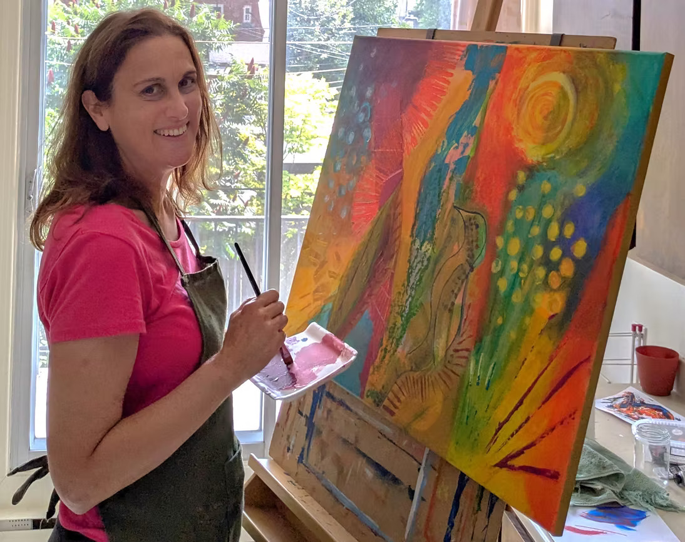

Née à Montréal et y résidant toujours, je suis une artiste peintre attachée à cette ville, d’une grande richesse culturelle. Depuis l'enfance, j'aime dessiner et m'adonner à différentes formes d'art plastique.
Tout en œuvrant dans l’enseignement pendant plusieurs années, j'ai suivi plusieurs formations artistiques, notamment au Centre design et impression textile de Montréal, où j'ai pu approfondir ma recherche sur les différents agencements de couleurs et sur les superpositions picturales qu'offrent cette forme d’art, principalement sur tissu.
Au travers d’autres formations, j’ai découvert par la suite une nouvelle passion artistique, celle de la peinture acrylique, à laquelle je me consacre entièrement depuis 2021. J’aime parfois enrichir ma peinture avec des touches d'encre acrylique, d'aquarelle, de pastel gras ou de collage afin d'obtenir la luminosité, les contrastes et le relief recherchés. Le mouvement, la texture et la superposition des couleurs en transparence qui se dégagent de mes œuvres sont les liens conducteurs dans mes créations.
Je puise principalement mon inspiration dans la nature. L'exploration des diverses variétés de textures, de formes et de couleurs qu'elle offre est un enchantement sans cesse renouvelé. Certains tableaux expriment toutefois sa fragilité et sa précarité dans un environnement de plus en plus menacé. Les animaux qu'on peut apercevoir à l'occasion sur certaines de mes toiles, comme les oiseaux et les poissons, sont apparus d'eux-mêmes en cours de création. Je les ai révélés davantage, par contraste. En somme, mes œuvres se veulent un hommage à la nature. Tout comme celle-ci, elles sont fortement colorées et en mouvement.